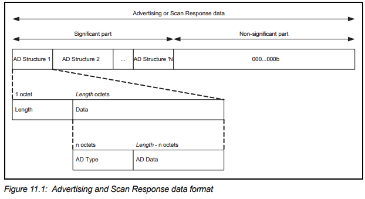
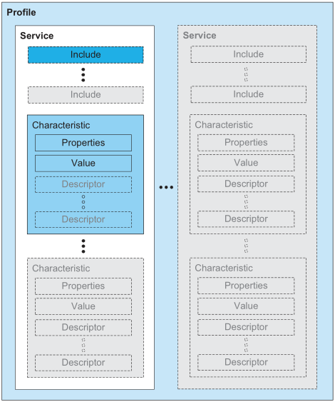

本文旨在提供一个方便没接触过Android上低功耗蓝牙(Bluetooth Low Energy)的同学快速上手使用的简易教程，因此对其中的一些细节不做过分深入的探讨，此外，为了让没有Ble设备的同学也能模拟与设备的交互过程，本文还提供了中央设备(central)和外围设备(peripheral)的示例代码，只需2部手机大家就可以愉快的“左右互搏”了。
准备工作
角色
上面我们提到了中央设备(central)和外围设备(peripheral),在这里我们可以这样简单的理解:
- 中央设备(central)：收到外围设备发出的广播信号后能主动发起连接的主设备，例如我们给摩拜单车开锁时我们的手机就是作为中央设备连接单车并进行开锁等一系列操作的，通常情况下同一时间一台中央设备只能与最多7台外围设备建立连接。
- 外围设备(peripheral):能被中央设备连接的从设备，同一时间外围设备只能被一个中央设备连接。
注：Android从4.3(API Level 18) 开始支持低功耗蓝牙，但是刚开始只支持作为中央设备（central）模式，从 Android 5.0(API Level 21) 开始才支持作为外围设备(peripheral)的模式，因此我们最好使用Android 5.0以上版本的手机进行下面的操作。
需要的权限
1 2 3 4 5
| <uses-permission android:name="android.permission.BLUETOOTH" /> <uses-permission android:name="android.permission.BLUETOOTH_ADMIN" /> <uses-permission android:name="android.permission.ACCESS_COARSE_LOCATION"/>
|
可能有人会问为什么使用低功耗蓝牙还需要位置权限?简单来说就是蓝牙也有定位的功能。
示例代码
开始
接下来我们就准备开始实际操作了，首先我们准备2台手机，手机A作为中央设备，手机B作为外围设备,在打开B手机的ble广播后，我们使用A手机进行打开蓝牙–>扫描–>连接–>获取服务，特征–>打开通知–>写特征–>读特征–>断开连接,通过这些步骤我们就能学会Android Ble 的基本方法的使用。
从扫描开始，接下来的这些操作中你可能会遇到各种奇奇怪怪的问题，为了减少大家踩坑的概率，我会在后面的操作中分享一些可能会遇到的问题和解决方法，有的问题在官方文档中可能有提到，有的在一些论坛帖子中有提及，还有的一些就是自己的经验之谈。
打开蓝牙
打开蓝牙有以下两种方式：
1 2 3 4 5 6
| BluetoothManager bluetoothManager= (BluetoothManager) getSystemService(Context.BLUETOOTH_SERVICE); BluetoothAdapter mBluetoothAdapter = bluetoothManager.getAdapter(); if (mBluetoothAdapter != null){ mBluetoothAdapter.enable(); }
|
1 2 3 4 5 6 7 8
| BluetoothManager bluetoothManager= (BluetoothManager) getSystemService(Context.BLUETOOTH_SERVICE); BluetoothAdapter mBluetoothAdapter = bluetoothManager.getAdapter(); if (!mBluetoothAdapter.isEnabled() && !mBluetoothAdapter.isEnabled()) { Intent enableBtIntent = new Intent( BluetoothAdapter.ACTION_REQUEST_ENABLE); startActivityForResult(enableBtIntent, REQUEST_ENABLE_BT); }
|
- 使用方法一将会直接打开蓝牙，使用方法二会跳转到系统Activity由用户手动打开蓝牙
扫描
扫描是一个非常耗电的操作，因此当我们找到我们需要的设备后应该马上停止扫描。官方提供了2个扫描的方法：
1 2 3 4 5 6 7 8 9 10 11 12 13 14 15 16 17 18 19 20 21 22 23 24 25 26
| private void scan(){ BluetoothManager bluetoothManager= (BluetoothManager) getSystemService(Context.BLUETOOTH_SERVICE); bluetoothManager.getAdapter().startLeScan(mLeScanCallback); UUID[] uuids=new UUID[]{UUID_ADV_SERVER}; bluetoothManager.getAdapter().startLeScan(uuids,mLeScanCallback); } private void stopScan(){ BluetoothManager bluetoothManager= (BluetoothManager) getSystemService(Context.BLUETOOTH_SERVICE); bluetoothManager.getAdapter().stopLeScan(mLeScanCallback); } LeScanCallback mLeScanCallback = new LeScanCallback() { @Override public void onLeScan(BluetoothDevice device, int rssi, byte[] scanRecord) { } };
|
↑ 这是个在Android 5.0时被标注deprecated的API，该方法目前仍能使用。由于onLeScan中回调出的设备的广播数据需要自己手动解析,这是个比较麻烦的过程。

在新的API中已经封装了方法来解析广播数据，如果为了适配性使用这个旧的扫描方法，同时又希望解析得到广播中的数据，我们可以使用源码中新API使用的解析方法(需要稍许修改，直接使用会报错),或者使用我自己修改过的方法,如果你想了解更多关于广播数据的解析可以看Core Specifications 5.0中Volume 3, Part C, Section 11这一节。
1 2 3 4 5 6 7 8 9 10 11 12 13 14 15 16 17 18 19 20 21 22 23 24 25 26 27 28 29 30 31 32 33 34 35 36 37 38 39 40 41 42 43
| private void scanNew() { BluetoothManager bluetoothManager= (BluetoothManager) getSystemService(Context.BLUETOOTH_SERVICE); bluetoothManager .getAdapter() .getBluetoothLeScanner() .startScan(mScanCallback); ScanSettings settings=new ScanSettings .Builder() .setScanMode(ScanSettings.SCAN_MODE_LOW_LATENCY) .build(); List<ScanFilter> scanFilters=new ArrayList<>(); bluetoothManager .getAdapter() .getBluetoothLeScanner() .startScan(scanFilters,settings,mScanCallback); } ScanCallback mScanCallback = new ScanCallback() { @Override public void onScanResult(int callbackType, ScanResult result) { } }; private void stopNewScan(){ BluetoothManager bluetoothManager= (BluetoothManager) getSystemService(Context.BLUETOOTH_SERVICE); bluetoothManager.getAdapter().getBluetoothLeScanner().stopScan(mScanCallback); }
|
相比旧API,新API的功能更全面，但是需要Android 5.0以上才能使用，究竟需要使用哪种方法，大家可以根据自己的实际情况选择。
注意坑来了：
1.如果搜索不到设备，请检查对于Android 6.0及以上版本ACCESS_COARSE_LOCATION或者ACCESS_FINE_LOCATION权限是否已经动态授予，同时检查位置信息(也就是GPS)是否已经打开，一般来说搜不到设备就是这两个原因。
2.不管是新旧API的扫描结果回调都是不停的回调扫描到的设备，就算是相同的设备也会重复回调,直到你停止扫描，因此最好不要在回调方法中做过多的耗时操作,否则可能会出现这个问题，如果需要处理回调的数据可以把数据放到另外一个线程处理，让回调尽快返回。
连接
同一时间我们只能对一个外围设备发起连接，如果需要对多个设备连接可以等上一个连接成功后再进行下一个连接，否则如果前面的某个连接操作失败了没有回调，后面的操作会被一直阻塞。
1 2 3 4 5 6 7 8 9 10 11 12 13 14 15 16 17 18 19 20 21 22 23 24 25 26 27 28 29 30 31 32 33 34 35 36 37 38 39 40 41 42 43 44 45 46 47 48 49 50 51 52 53 54 55 56 57 58 59 60 61 62 63 64 65 66 67 68 69 70 71 72 73 74
| private void connect(BluetoothDevice device){ mBluetoothGatt = device.connectGatt(context, false, mBluetoothGattCallback); } BluetoothGattCallback mBluetoothGattCallback = new BluetoothGattCallback() { @Override public void onConnectionStateChange(BluetoothGatt gatt, int status, int newState) { } @Override public void onServicesDiscovered(BluetoothGatt gatt, int status) { } @Override public void onCharacteristicRead(BluetoothGatt gatt, final BluetoothGattCharacteristic characteristic, final int status) { } @Override public void onCharacteristicWrite(BluetoothGatt gatt, final BluetoothGattCharacteristic characteristic, final int status) { } @Override public void onCharacteristicChanged(BluetoothGatt gatt, final BluetoothGattCharacteristic characteristic) { } @Override public void onDescriptorRead(BluetoothGatt gatt, BluetoothGattDescriptor descriptor, int status) { } @Override public void onDescriptorWrite(BluetoothGatt gatt, BluetoothGattDescriptor descriptor, int status) { } };
|
当我们调用connectGatt方法后会触发onConnectionStateChange这个回调，回调中的status我们用来判断这次操作的成功与否，newState用来判断当前的连接状态。
注意坑来了：
- 我们在调用连接和断开连接这两方法的时候最好放到主线程调用，否则可能会在一些手机上遇到奇怪的问题
获取服务，特征
当我们连接成功后，GATT客户端(手机A)可以通过发现方法检索GATT服务端(手机B)的服务和特征，以便后面操作使用。

1 2 3 4 5 6 7 8 9 10 11 12 13 14 15 16 17 18 19 20 21 22 23
| gatt.discoverServices(); @Override public void onServicesDiscovered(BluetoothGatt gatt, int status) { BluetoothGattService service = gatt.getService(UUID_SERVER); List<BluetoothGattService> services = gatt.getServices(); if (service!=null){ mCharacteristic = service.getCharacteristic(UUID_CHARWRITE); List<BluetoothGattCharacteristic> characteristics = service.getCharacteristics(); } }
|
打开通知
打开通知官方的标准做法分两步:
1 2 3 4 5 6 7 8 9 10 11 12 13
| private BluetoothGatt mBluetoothGatt; BluetoothGattCharacteristic characteristic; boolean enabled; ... mBluetoothGatt.setCharacteristicNotification(characteristic, enabled); ... BluetoothGattDescriptor descriptor = characteristic.getDescriptor( UUID.fromString(SampleGattAttributes.CLIENT_CHARACTERISTIC_CONFIG)); descriptor.setValue(BluetoothGattDescriptor.ENABLE_NOTIFICATION_VALUE); mBluetoothGatt.writeDescriptor(descriptor);
|
由于Android7.0以前版本存在一个bug:对descriptor的写操作会复用父特征的写入类型，这个bug在7.0之后进行了修复,为了提高兼容性，我们可以对官方做法稍许修改：
1 2 3 4 5 6 7 8 9 10 11 12 13 14 15 16 17 18
| private BluetoothGatt mBluetoothGatt; BluetoothGattCharacteristic characteristic; boolean enabled; ... mBluetoothGatt.setCharacteristicNotification(characteristic, enabled); ... BluetoothGattDescriptor descriptor = characteristic.getDescriptor( UUID.fromString(SampleGattAttributes.CLIENT_CHARACTERISTIC_CONFIG)); int parentWriteType = characteristic.getWriteType(); characteristic.setWriteType(BluetoothGattCharacteristic.WRITE_TYPE_DEFAULT); descriptor.setValue(BluetoothGattDescriptor.ENABLE_NOTIFICATION_VALUE); mBluetoothGatt.writeDescriptor(descriptor); characteristic.setWriteType(parentWriteType);
|
接下来我们来看看回调
1 2 3 4 5 6 7 8 9 10 11
| @Override public void onCharacteristicChanged(BluetoothGatt gatt, final BluetoothGattCharacteristic characteristic) { } @Override public void onDescriptorWrite(BluetoothGatt gatt, BluetoothGattDescriptor descriptor, int status) { }
|
注意:
- 对于有的设备可能我们只需要执行第一步就能收到通知，但是为了保险起见我们最好两步都做，以防出现通知开启无效的情况。
- 再次强调读、写、通知等这些GATT的操作都只能串行的使用，并且在执行下一个任务前必须保证上一个任务已经完成并且成功回调，否则可能出现后面的任务都阻塞无法进行的情况。
- 对于开启通知这个操作触发onDescriptorWrite时代表任务完成，可以进行下一个GATT操作。
写特征
1 2 3 4 5 6 7 8 9 10 11 12 13 14 15
| mCharacteristic.setWriteType(BluetoothGattCharacteristic.WRITE_TYPE_DEFAULT); mCharacteristic.setWriteType(BluetoothGattCharacteristic.WRITE_TYPE_NO_RESPONSE); mCharacteristic.setValue(data); mBluetoothGatt.writeCharacteristic(mCharacteristic); @Override public void onCharacteristicWrite(BluetoothGatt gatt, final BluetoothGattCharacteristic characteristic, final int status) { }
|
写特征的用法和前面打开通知中的写descriptor类似。
注意:
读特征
1 2 3 4 5 6 7 8 9
| mBluetoothGatt.readCharacteristic(mCharacteristic); @Override public void onCharacteristicRead(BluetoothGatt gatt, final BluetoothGattCharacteristic characteristic, final int status) { }
|
读特征这个操作没多少坑，只是需要前面提到的成功回调以后才算执行完成
断开连接
1 2 3 4 5 6 7 8 9 10 11 12 13 14 15
| private void disConnect(){ if (mBluetoothGatt!=null){ mBluetoothGatt.disconnect(); } } @Override public void onConnectionStateChange(BluetoothGatt gatt, int status, int newState) { if (newState==BluetoothProfile.STATE_DISCONNECTED){ gatt.close(); } }
|
注意:
- 断开连接和连接一样最好都在主线程执行
- BluetoothGatt.disConnect()方法和BluetoothGatt.close()方法要成对配合使用，有一点需要注意：如果调用disConnect()方法后立即调用close()方法(就像上面注释掉的代码那样)蓝牙能正常断开，只是在onConnectionStateChange中我们就收不到newState为BluetoothProfile.STATE_DISCONNECTED的状态回调，因此，可以在收到断开连接的回调后在关闭GATT客户端。
- 如果断开连接后没调用close方法，在多次重复连接-断开之后可能你就再也连不上设备了。
总结
其实这篇文章除了给大家列举了一些使用的API和可能遇到的问题外，最主要是要强调一个蓝牙操作的节奏，也就是一个任务完成下一个任务才能开始的原则，为了便于大家入门，上面这些使用简化了很多需要考虑的逻辑，例如：读、写、通知一直没回调怎么办？(可以给这些操作都加上超时时间)等等，不过如果大家按照本文提供的方法使用就已经能避开很多可能会遇到的奇怪问题了。
如果大家需要了解更多更详细的使用方法，这里给大家推荐2个开源的ble库：